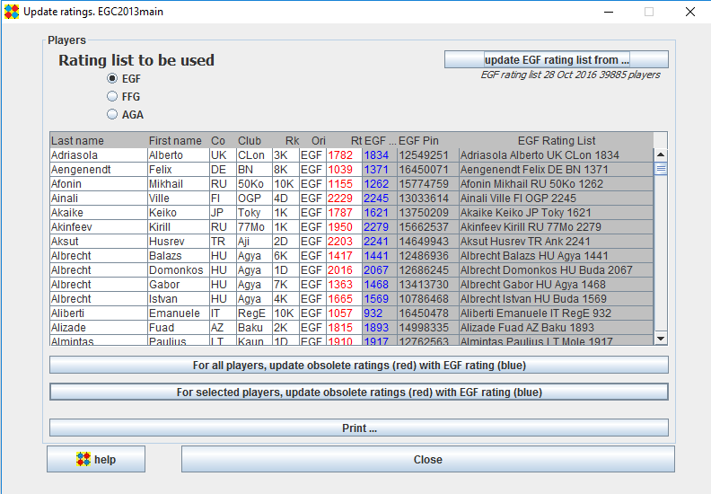

The left part (white background) of the "Players" panel shows the list of players in the tournament.
The right part (grey background) shows the players current EGF rating.
OpenGotha tries to match the tournament players with the EGF database.
Search is first made by EGF Pin, and if the EGF Pin is not found, a search is made by name and first name.
If a player is found, it is shown.
If no player is found, a red "????" is displayed in EGF Rt column.